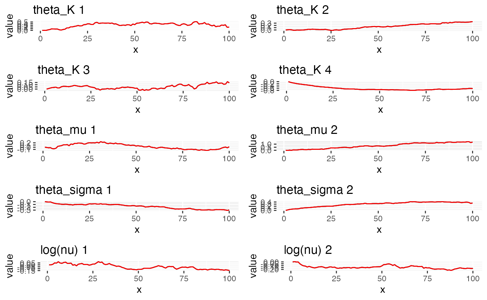

bivariate.RmdFor many applications, we need to deal with multivariate data. In this vignette, we will introduce the bivariate model which supports modeling two field and their correlation jointly.
The f function specification is similar to ordinary
model (See e.g. Ngme2 AR(1) model), but
with two more fields. Extra arguments for the f are:
group: a vector of labels to indicate the group of
different observations. For example,
group = c("field1", "field1", "field2", "field2", "field2).
If group is provided in ngme() function, no
need to provide in f() function again.
sub_models: characters of length 2 with names equal
to one of the labels in group, specifying the sub-models
for the two fields.
e.g. sub_models=c(field1="rw1", field2="ar1")
The bivariate model can model two fields \(X_1, X_2\) jointly. To model their correlation, we use dependence matrix \(D(\zeta, \rho)\) to correlate them (See Bolin and Wallin, 2020, section 2.2).
It’s eaiser to understand with one exmaple. Say we have a time series model over 5 year from 2001 to 2005, with 2 fields temperature and precipitation. You want to model the two fields jointly. The data look like the following:
# load library
library(INLA); library(ngme2)
#> Loading required package: Matrix
#> Loading required package: sp
#> The legacy packages maptools, rgdal, and rgeos, underpinning the sp package,
#> which was just loaded, will retire in October 2023.
#> Please refer to R-spatial evolution reports for details, especially
#> https://r-spatial.org/r/2023/05/15/evolution4.html.
#> It may be desirable to make the sf package available;
#> package maintainers should consider adding sf to Suggests:.
#> The sp package is now running under evolution status 2
#> (status 2 uses the sf package in place of rgdal)
#> This is INLA_23.06.29 built 2023-06-30 04:37:06 UTC.
#> - See www.r-inla.org/contact-us for how to get help.
#> This is ngme2 of version 0.5.0
#> - See our homepage: https://davidbolin.github.io/ngme2 for more details.
#>
#> Attaching package: 'ngme2'
#> The following object is masked from 'package:INLA':
#>
#> f
temp <- c(32, 33, 35.5, 36); year_temp <- c(2001, 2002, 2003, 2004)
precip <- c(0.1, 0.2, 0.5, 1, 0.2); year_pre <- c(2001, 2002, 2003, 2004, 2005)
# bind 2 fields, and also make laebls for them
y <- c(temp, precip); year <- c(year_temp, year_pre)
labels <- c(rep("temp", 4), rep("precip", 5)) # group is label for 2 fields
x1 <- 1:9
data <- data.frame(y, year, x1, labels)
data
#> y year x1 labels
#> 1 32.0 2001 1 temp
#> 2 33.0 2002 2 temp
#> 3 35.5 2003 3 temp
#> 4 36.0 2004 4 temp
#> 5 0.1 2001 5 precip
#> 6 0.2 2002 6 precip
#> 7 0.5 2003 7 precip
#> 8 1.0 2004 8 precip
#> 9 0.2 2005 9 precipNext we need to specify the model using f() function.
Notice the way to specify 2 sub-models, and also 2 types of noises for
each sub-model.
# 1st way: simply put model types, using both c() and list() are ok
bv1 <- f(
year, model = "bv",
theta = 1,
sub_models = list(precip="ar1", temp="rw1"),
# sub_models = c(precip="ar1", temp="rw1"),
group = labels, # can be provided in ngme()
noise = list(
precip=noise_normal(),
temp=noise_normal()
)
)
bv1
#> Model type: Bivariate model
#> theta = 1
#> rho = 0
#> precip: AR(1)
#> rho = 0
#> temp: Random walk (order 1)
#> No parameter.
#> Bivariate type-G4 noise:
#> precip: NORMAL
#> Noise parameters:
#> sigma = 1
#> temp: NORMAL
#> Noise parameters:
#> sigma = 1
# 2nd way: allow more argument for sub_models
bv2 <- f(
year, model = "bv",
sub_models = list(
precip=list(model="ar1", rho=0.5), # specify rho for ar1 model
temp=list(model="rw1")
),
group = labels,
noise = list(
precip=noise_normal(),
temp=noise_nig() # can have 2 different noise for each field
)
)
bv2
#> Model type: Bivariate model
#> theta = 0
#> rho = 0
#> precip: AR(1)
#> rho = 0.5
#> temp: Random walk (order 1)
#> No parameter.
#> Bivariate type-G4 noise:
#> precip: NORMAL
#> Noise parameters:
#> sigma = 1
#> temp: NIG
#> Noise parameters:
#> mu = 0
#> sigma = 1
#> nu = 1In bivariate models, we can have more control over the noise of the model. The noise can be classified into 4 category (See Bolin and Wallin, 2020, section 3.1):
Type-G1: single mixing variable V, share V over 2 fileds
Type-G2: single V, different V for each field
Type-G3: general V, share V
Type-G4: general V, different V
we can specify the type of noise by the following:
t1 <- f(
year, model = "bv",
sub_models = list(precip="ar1", temp="rw1"),
group = labels,
noise = list(
precip=noise_normal(single_V=TRUE),
temp=noise_normal(single_V=TRUE),
share_V = TRUE
)
)
t1
#> Model type: Bivariate model
#> theta = 0
#> rho = 0
#> precip: AR(1)
#> rho = 0
#> temp: Random walk (order 1)
#> No parameter.
#> Bivariate type-G1 noise (single_V && share_V):
#> precip: NORMAL
#> Noise parameters:
#> sigma = 1
#> temp: NORMAL
#> Noise parameters:
#> sigma = 1
t2 <- f(
year, model = "bv",
sub_models = list(precip="ar1", temp="rw1"),
group = labels,
noise = list(
precip=noise_normal(single_V=TRUE),
temp=noise_normal(single_V=TRUE)
)
)
t2
#> Model type: Bivariate model
#> theta = 0
#> rho = 0
#> precip: AR(1)
#> rho = 0
#> temp: Random walk (order 1)
#> No parameter.
#> Bivariate type-G2 noise (single_V):
#> precip: NORMAL
#> Noise parameters:
#> sigma = 1
#> temp: NORMAL
#> Noise parameters:
#> sigma = 1
t3 <- f(
year, model = "bv",
sub_models = list(precip="ar1", temp="rw1"),
group = labels,
noise = list(
precip=noise_normal(),
temp=noise_normal(),
share_V = TRUE
)
)
t3
#> Model type: Bivariate model
#> theta = 0
#> rho = 0
#> precip: AR(1)
#> rho = 0
#> temp: Random walk (order 1)
#> No parameter.
#> Bivariate type-G3 noise (share_V):
#> precip: NORMAL
#> Noise parameters:
#> sigma = 1
#> temp: NORMAL
#> Noise parameters:
#> sigma = 1
t4 <- f(
year, model = "bv",
sub_models = list(precip="ar1", temp="rw1"),
group = labels,
noise = list(
precip=noise_normal(),
temp=noise_normal()
)
)
t4
#> Model type: Bivariate model
#> theta = 0
#> rho = 0
#> precip: AR(1)
#> rho = 0
#> temp: Random walk (order 1)
#> No parameter.
#> Bivariate type-G4 noise:
#> precip: NORMAL
#> Noise parameters:
#> sigma = 1
#> temp: NORMAL
#> Noise parameters:
#> sigma = 1When it involves more than one field, things get complicated. When we
have fixed effects but only for 1 field, we can use the special syntax
fe(<formula>, which_group=<group_name>). The
argument which_group will tell which field we have fixed
effects on. It works similar for modeling using f()
function.
Here is one example, we have different fixed effects on different fields (Intercept for both fields, and x1 for only precip field).
m1 <- ngme(
y ~ 0 + fe(~1, which_group = "temp") +
fe(~1+x1, which_group = "precip") +
f(year, model="rw1", which_group = "temp") +
f(year,
model = "bv",
sub_models = list(precip="ar1", temp="rw1"),
group = labels, # can be provided in ngme()
noise = list(
precip = noise_nig(),
temp = noise_nig()
)
),
data = data,
group = data$labels,
control_opt = control_opt(
estimation = FALSE,
iterations = 10
)
)
m1
#> *** Ngme object ***
#>
#> Fixed effects:
#> (Intercept)_temp (Intercept)_precip x1_precip
#> 34.1 -0.3 0.1
#>
#> Models:
#> $field1
#> Model type: Random walk (order 1)
#> No parameter.
#> Noise type: NORMAL
#> Noise parameters:
#> sigma = 1
#>
#> $field2
#> Model type: Bivariate model
#> theta = 0
#> rho = 0
#> precip: AR(1)
#> rho = 0
#> temp: Random walk (order 1)
#> No parameter.
#> Bivariate type-G4 noise:
#> precip: NIG
#> Noise parameters:
#> mu = 0
#> sigma = 1
#> nu = 1
#> temp: NIG
#> Noise parameters:
#> mu = 0
#> sigma = 1
#> nu = 1
#>
#>
#> Measurement noise:
#> Noise type: NORMAL
#> Noise parameters:
#> sigma = 1
#>
#>
#> Number of replicates is 1
m1$replicates[[1]]$X
#> (Intercept)_temp (Intercept)_precip x1_precip
#> 1 1 0 0
#> 2 1 0 0
#> 3 1 0 0
#> 4 1 0 0
#> 5 0 1 5
#> 6 0 1 6
#> 7 0 1 7
#> 8 0 1 8
#> 9 0 1 9Besides modeling the dependence between 2 fields. We can also measure
the correlation between the measurement error of 2 fields. In the
family argument, we need to set
corr_measurement and give the index_corr to
indicate which observations are correlated.
Y <- 1:6
loc1 <- c(2, 1, 3, 1, 4, 2) # same index is correlated
group <- c("s", "t", "s", "s", "t", "t")
# ngme
m2 <- ngme(
Y ~ 0 + f(
loc1, model="bv",
sub_models = c(t="ar1", s="rw1"),
noise = list(t=noise_nig(), s=noise_nig())
),
family = noise_normal(
corr_measurement = TRUE,
index_corr = loc1
),
group = group,
data = data.frame(Y = Y, loc1 = loc1)
)
#> Starting estimation...
#>
#> Posterior sampling done!
m2
#> *** Ngme object ***
#>
#> Fixed effects:
#> None
#>
#> Models:
#> $field1
#> Model type: Bivariate model
#> theta = -16.3
#> rho = 1.11
#> t: AR(1)
#> rho = 0.994
#> s: Random walk (order 1)
#> No parameter.
#> Bivariate type-G4 noise:
#> t: NIG
#> Noise parameters:
#> mu = 6.01
#> sigma = 0.0708
#> nu = 8.74
#> s: NIG
#> Noise parameters:
#> mu = 0.945
#> sigma = 2.25
#> nu = 1.74e+10
#>
#>
#> Measurement noise:
#> Noise type: NORMAL
#> Noise parameters:
#> sigma = 3.62
#> correlation(rho) = 0.292
#>
#>
#> Number of replicates is 1Next we see an less artificial example.
pl01 <- cbind(c(0, 1, 1, 0, 0) * 10, c(0, 0, 1, 1, 0) * 5)
mesh <- inla.mesh.2d(
loc.domain = pl01, cutoff = 0.2,
max.edge = c(1,10)
)
mesh$n
#> [1] 257
n_obs <- 300
long <- runif(n_obs, 0, 10)
lat <- runif(n_obs, 0, 5)
group <- c(rep("sal", n_obs/2), rep("temp", n_obs/2))
head(data)
#> y year x1 labels
#> 1 32.0 2001 1 temp
#> 2 33.0 2002 2 temp
#> 3 35.5 2003 3 temp
#> 4 36.0 2004 4 temp
#> 5 0.1 2001 5 precip
#> 6 0.2 2002 6 precip
true_model <- f(
~long + lat,
mesh = mesh,
model = "bv",
sub_models = list(
sal="matern",
temp="matern"
),
group = group,
# noise = noise_nig(
# mu=-2, sigma=2, nu=1
# ),
noise = list(sal = noise_nig(
mu = -2, sigma=1, nu=1
), temp = noise_nig(
mu = 2, sigma=2, nu=0.5
))
)
W <- simulate(true_model)
Y <- as.numeric(true_model$A %*% W); Y <- Y + rnorm(length(Y))
data <- data.frame(Y, long, lat)
out <- ngme(
Y ~ f(
~long + lat,
mesh = mesh,
model = "bv",
name = "bv",
sub_models = list(sal="matern", temp="matern"),
group = group,
debug=T,
# noise = noise_nig()
# noise = list(sal = noise_nig(), temp = noise_nig())
noise = list(sal = noise_normal(), temp = noise_normal())
),
data = data,
control_opt = control_opt(
estimation = T,
iterations = 5,
n_parallel_chain = 1,
verbose = F,
print_check_info = F
)
)
#> Starting estimation...
#>
#> Posterior sampling done!
out
#> *** Ngme object ***
#>
#> Fixed effects:
#> (Intercept)
#> 0.203
#>
#> Models:
#> $bv
#> Model type: Bivariate model
#> theta = 0.00757
#> rho = 0.0372
#> sal: Matern
#> kappa = 0.893
#> temp: Matern
#> kappa = 0.833
#> Bivariate type-G4 noise:
#> sal: NORMAL
#> Noise parameters:
#> sigma = 1.02
#> temp: NORMAL
#> Noise parameters:
#> sigma = 1.08
#>
#>
#> Measurement noise:
#> Noise type: NORMAL
#> Noise parameters:
#> sigma = 1.01
#>
#>
#> Number of replicates is 1
str(out$replicates[[1]]$models[[1]]$noise)
#> List of 23
#> $ noise_type : chr [1:2] "normal" "normal"
#> $ nu : num [1:2] 1 1
#> $ n_nu : int 2
#> $ V : num [1:514] 0.462 0.475 0.465 0.471 0.462 ...
#> $ theta_mu : num [1:2] 0 0
#> $ theta_sigma : num [1:2] 0.0236 0.0737
#> $ theta_sigma_normal : NULL
#> $ B_mu : num [1:514, 1:2] 1 1 1 1 1 1 1 1 1 1 ...
#> $ B_sigma : num [1:514, 1:2] 1 1 1 1 1 1 1 1 1 1 ...
#> $ B_sigma_normal : NULL
#> $ n_theta_mu : int 2
#> $ n_theta_sigma : int 2
#> $ n_theta_sigma_normal: int 0
#> $ fix_theta_mu : logi FALSE
#> $ fix_theta_sigma : logi FALSE
#> $ fix_nu : logi FALSE
#> $ fix_V : logi FALSE
#> $ n_params : int 6
#> $ single_V : logi FALSE
#> $ share_V : logi FALSE
#> $ corr_measurement : logi FALSE
#> $ index_corr : NULL
#> $ bv_noises :List of 2
#> ..$ sal :List of 28
#> .. ..$ noise_type : chr "normal"
#> .. ..$ nu : num 1
#> .. ..$ n_nu : int 1
#> .. ..$ V : NULL
#> .. ..$ theta_mu : num 0
#> .. ..$ theta_sigma : num 0.0236
#> .. ..$ theta_sigma_normal : NULL
#> .. ..$ B_mu : num [1:257, 1] 1 1 1 1 1 1 1 1 1 1 ...
#> .. ..$ B_sigma : num [1:257, 1] 1 1 1 1 1 1 1 1 1 1 ...
#> .. ..$ B_sigma_normal : NULL
#> .. ..$ n_theta_mu : int 1
#> .. ..$ n_theta_sigma : int 1
#> .. ..$ n_theta_sigma_normal: int 0
#> .. ..$ fix_theta_mu : logi FALSE
#> .. ..$ fix_theta_sigma : logi FALSE
#> .. ..$ fix_nu : logi FALSE
#> .. ..$ fix_V : logi FALSE
#> .. ..$ n_params : int 3
#> .. ..$ single_V : logi FALSE
#> .. ..$ share_V : logi FALSE
#> .. ..$ corr_measurement : logi FALSE
#> .. ..$ index_corr : NULL
#> .. ..$ rho : num 0
#> .. ..$ n_nu : int 1
#> .. ..$ n_theta_mu : int 1
#> .. ..$ n_theta_sigma : int 1
#> .. ..$ n_theta_sigma_normal: int 0
#> .. ..$ n_params : int 3
#> .. ..- attr(*, "class")= chr "ngme_noise"
#> ..$ temp:List of 28
#> .. ..$ noise_type : chr "normal"
#> .. ..$ nu : num 1
#> .. ..$ n_nu : int 1
#> .. ..$ V : NULL
#> .. ..$ theta_mu : num 0
#> .. ..$ theta_sigma : num 0.0737
#> .. ..$ theta_sigma_normal : NULL
#> .. ..$ B_mu : num [1:257, 1] 1 1 1 1 1 1 1 1 1 1 ...
#> .. ..$ B_sigma : num [1:257, 1] 1 1 1 1 1 1 1 1 1 1 ...
#> .. ..$ B_sigma_normal : NULL
#> .. ..$ n_theta_mu : int 1
#> .. ..$ n_theta_sigma : int 1
#> .. ..$ n_theta_sigma_normal: int 0
#> .. ..$ fix_theta_mu : logi FALSE
#> .. ..$ fix_theta_sigma : logi FALSE
#> .. ..$ fix_nu : logi FALSE
#> .. ..$ fix_V : logi FALSE
#> .. ..$ n_params : int 3
#> .. ..$ single_V : logi FALSE
#> .. ..$ share_V : logi FALSE
#> .. ..$ corr_measurement : logi FALSE
#> .. ..$ index_corr : NULL
#> .. ..$ rho : num 0
#> .. ..$ n_nu : int 1
#> .. ..$ n_theta_mu : int 1
#> .. ..$ n_theta_sigma : int 1
#> .. ..$ n_theta_sigma_normal: int 0
#> .. ..$ n_params : int 3
#> .. ..- attr(*, "class")= chr "ngme_noise"
#> - attr(*, "class")= chr "ngme_noise"
traceplot(out, "bv")
out$replicates[[1]]$models[[1]]$noise$bv_noises[[2]]$h
#> NULL
# load_all()
# n_obs <- 20
# W <- simulate(f(1:n_obs, model="iid", eval=TRUE))
# Cov_eps <- matrix(c(1, -0, -0, 1), nrow=2)
# Cov_eps <- Cov_eps %x% diag(n_obs / 2)
# # e~N(0, Cov_eps)
# e <- MASS::mvrnorm(1, rep(0, n_obs), Cov_eps)
# Y <- W + e
# plot(head(e, n_obs/2), type="l")
# lines(tail(e, n_obs/2), col="red")
# load_all()
# out <- ngme(
# Y ~ 0 + f(
# 1:n_obs,
# model="ar1",
# debug=T,
# noise= noise_normal()
# ),
# family = noise_normal(
# # fix_theta_sigma = T,
# corr_measurement = TRUE,
# index_corr = c(1: (n_obs/2), 1: (n_obs/2))
# ),
# data = data.frame(Y = Y),
# control_opt = control_opt(
# estimation = F,
# iterations = 1,
# n_parallel_chain = 1,
# verbose = T
# ),
# debug = T
# )
# out$replicates[[1]]$pmat
# pmat <- as(as.integer(c(2,3,1)), "pMatrix")
# pmat
# class(pmat)
# class(Matrix::t(pmat))
# pp = ngme_as_sparse(Matrix::t(pmat))
# pp
# class(pp)
# class(out$replicates[[1]]$pmat)
# traceplot(out)
# test if it is permutation in variant!!
# library(devtools)
# load_all()
# n_obs <- 2000
# W <- simulate(f(1:n_obs, rho = 0.5, model="ar1", eval=TRUE))
# Cov_eps <- matrix(c(1, 0.9, 0.9, 1), nrow=2)
# Cov_eps <- Cov_eps %x% diag(n_obs / 2)
# # e~N(0, Cov_eps)
# L <- t(chol(Cov_eps))
# e <- L %*% rnorm(n_obs)
# x1 <- rexp(n_obs)
# x2 <- rnorm(n_obs)
# Y <- W +e + x1 * (-3) + x2 * 1.5
# plot(head(e, n_obs/2), type="l")
# lines(tail(e, n_obs/2), col="red")
# load_all()
# out <- ngme(
# Y ~ 0 + x1 + x2+ f(
# 1:n_obs,
# # fix_W = T, W = W,
# model="ar1"
# ),
# family = noise_normal(
# # fix_theta_sigma = T,
# corr_measurement = TRUE,
# index_corr = c(1: (n_obs/2), 1: (n_obs/2))
# # index_corr = "field1"
# ),
# data = data.frame(Y, x1, x2),
# control_opt = control_opt(
# estimation = T,
# iterations = 5,
# n_parallel_chain = 1
# )
# )
# traceplot(out, "field1")
# traceplot(out)
# out